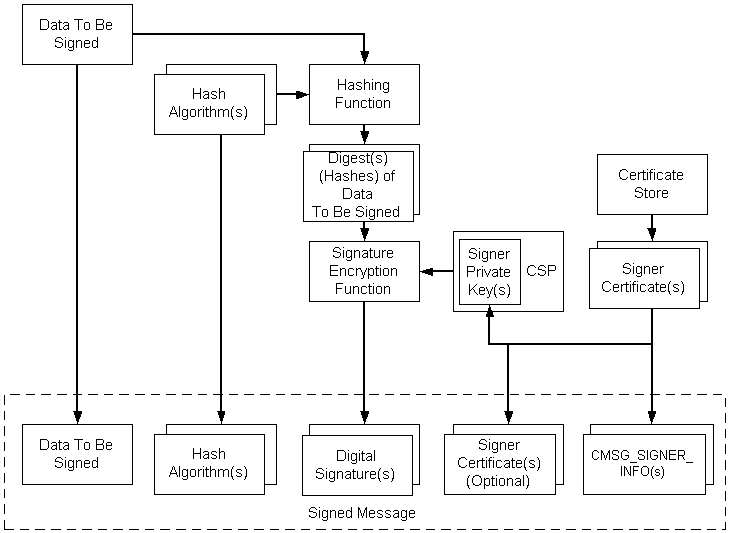

Signed data consists of content of any type and encrypted message hashes of the content by zero or more signers. The resulting hash can confirm that the original message has not been modified since signing and that particular persons or entities signed the data.
The following illustration depicts the procedure for encoding a signed message. The list following the illustration describes the steps.
A message may have multiple signers, hashing algorithms, and certificates. While the illustration shows only certificates, CRLs, and CTLs can use the same process. They would fit into the illustration wherever certificates are shown.

The general process for encoding Signed data is as follows.
To encode signed data
This procedure illustrates a simple case. More complex cases involve authenticated attributes included in the message. When the content type is anything but a BYTE string, or there is at least one authenticated attribute along with any data type, there are two standard authenticated attributes required: the content (data) type, and the hash of the content. Under these circumstances, the CryptoAPI automatically provides these two required attributes. The low-level message functions hash the authenticated attributes, encrypt the hash with the private key, and provide this as the signature.
Use the low-level message functions to accomplish the tasks just listed, by using the following procedure.
To encode a signed message
Create or retrieve the content.
Get a cryptographic provider.
Get the signer certificates.
Initialize the CMSG_SIGNER_ENCODE_INFO structure.
Initialize the CMSG_SIGNED_ENCODE_INFO structure.
Call CryptMsgCalculateEncodedLength to get the size of the encoded message BLOB. Allocate memory for it.
Call CryptMsgOpenToEncode, passing in CMSG_SIGNED for dwMsgType and a pointer to CMSG_SIGNED_ENCODE_INFO for pvMsgEncodeInfo to get a handle to the opened message.
Call CryptMsgUpdate, passing in the handle retrieved in step 7, and a pointer to the data that is to be signed and encoded. This function can be called as many times as necessary to complete the encoding process.
Call CryptMsgGetParam, passing in the handle retrieved in step 7 and the appropriate parameter types to access the desired, encoded data. For example, pass in CMSG_CONTENT_PARAM to get a pointer to the entire PKCS #7 message.
If the result of this encoding is to be used as the inner data for another encoded message, such as an enveloped message, the CMSG_BARE_CONTENT_PARAM parameter must be passed. For an example showing this, see Alternate Code for Encoding an Enveloped Message.
Close the message by calling CryptMsgClose.
The result of this procedure is an encoded message that contains the original data, the encrypted hash of that data (signature), and the signer information. There is also a pointer to the desired, encoded BLOB.
For C coding details, see Example C Program: Signing, Encoding, Decoding, and Verifying a Message.
Â
Â